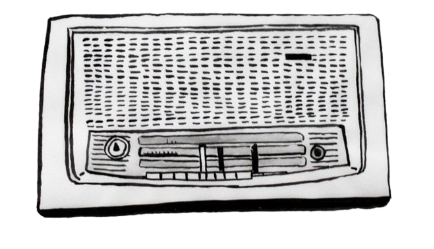

ANTES DE CONVERTIRSE EN DATOS
UNA JUGADA
ESCUCHADA
Una jugada también podía convertirse en voz. En los años 60 y 80 la mayoría no veía el partido: lo escuchaba.

Pulsa
Pulsa
EL RELATO
El relator seleccionaba el ritmo,
el tono y el grito del gol.
El oyente imaginaba el resto.
La radio no reproduce la jugada:
la convierte en relato.
SELECCIÓN Y LÍMITE
Qué selecciona: El relato en tiempo real, el tono emocional, el ruido de la cancha, el momento del gol.
Qué deja fuera: Las posiciones exactas, la trayectoria visual del balón, el ángulo del disparo, todo lo que no entra en la voz del relator.
ARCHIVAR / NARRACIÓN RADIAL